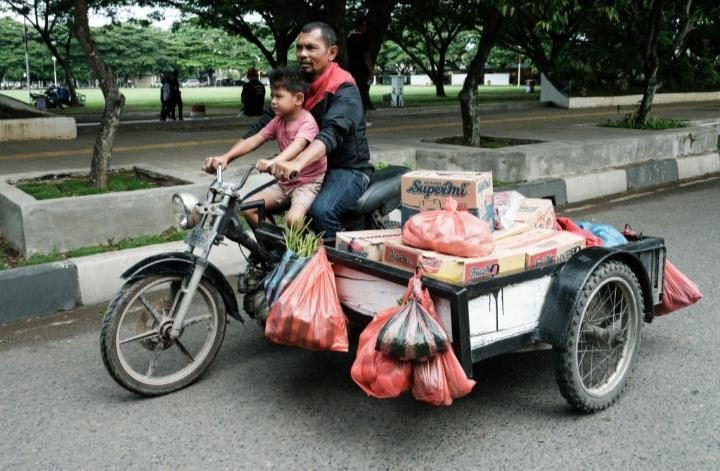

Di Balik Lelahnya Orang Tua, Ada Cinta yang Tak Pernah Meminta Balasan

Tidak semua perjuangan diceritakan dengan kata-kata. Ada perjuangan yang tersembunyi di balik tubuh yang lelah, tangan yang mulai menua, dan senyum yang tetap diberikan meskipun kehidupan sedang tidak baik-baik saja. Perjuangan itu sering kali datang dari dua sosok yang kita panggil ayah dan ibu.
Sejak seorang anak dilahirkan, orang tua mulai menjalani perjalanan panjang yang penuh tanggung jawab. Mereka berusaha memenuhi kebutuhan keluarga, memberikan pendidikan terbaik, serta memastikan anak-anaknya tumbuh dengan baik. Tidak jarang, keinginan pribadi harus dikesampingkan demi kebahagiaan keluarga.
Seorang ayah mungkin berangkat bekerja ketika sebagian orang masih terlelap dan baru kembali ketika hari mulai gelap. Sementara itu, seorang ibu bisa menghabiskan sebagian besar waktunya untuk mengurus rumah, mendampingi anak belajar, dan memastikan kebutuhan keluarga terpenuhi. Pekerjaan mereka berbeda, tetapi keduanya memiliki tujuan yang sama: memberikan kehidupan yang lebih baik bagi anak-anaknya.
Sayangnya, perjuangan tersebut terkadang baru disadari ketika anak mulai beranjak dewasa. Saat masih kecil, seorang anak mungkin menganggap uang jajan, makanan di meja, pakaian yang dikenakan, dan biaya pendidikan sebagai sesuatu yang biasa. Padahal, di balik semua itu, ada waktu, tenaga, pikiran, dan pengorbanan yang tidak sedikit.
Orang tua juga manusia biasa. Mereka bisa merasa lelah, kecewa, sedih, bahkan takut menghadapi masa depan. Namun, tidak semua perasaan itu mereka tunjukkan kepada anak-anaknya. Ada orang tua yang memilih menyimpan kekhawatirannya sendiri agar anaknya tetap merasa aman dan dapat menjalani kehidupan dengan tenang.
Pengorbanan orang tua bukan hanya tentang memenuhi kebutuhan materi. Lebih dari itu, mereka memberikan perhatian, perlindungan, nasihat, dan kesempatan kepada anak-anaknya untuk tumbuh menjadi pribadi yang mandiri. Bahkan ketika anak melakukan kesalahan, banyak orang tua tetap berusaha membimbingnya agar dapat memperbaiki diri.
Hal ini mengingatkan kita bahwa kasih sayang tidak selalu hadir dalam bentuk hadiah mahal atau ungkapan romantis. Terkadang, kasih sayang hadir melalui pertanyaan sederhana seperti, “Sudah makan belum?”, “Bagaimana kuliahmu hari ini?”, atau “Hati-hati di jalan, ya.”
Kalimat-kalimat tersebut mungkin terdengar biasa. Namun, di dalamnya terdapat perhatian yang sering kali tidak kita sadari nilainya.
Lalu, bagaimana cara membalas semua perjuangan tersebut?
Kita tidak harus menunggu sukses untuk menunjukkan rasa terima kasih. Meluangkan waktu untuk berbicara dengan orang tua, membantu pekerjaan mereka, mendengarkan cerita mereka, dan memberikan perhatian sederhana dapat menjadi bentuk penghargaan yang berarti.
Ketika orang tua semakin bertambah usia, mereka mungkin tidak lagi membutuhkan banyak hal seperti ketika kita masih kecil. Bisa jadi, yang mereka inginkan hanyalah waktu bersama anak-anaknya, kabar yang menenangkan, dan kepastian bahwa mereka masih memiliki tempat dalam kehidupan kita.
Pada akhirnya, kesuksesan seorang anak memang dapat menjadi kebanggaan orang tua. Namun, kebahagiaan mereka tidak selalu diukur dari seberapa tinggi jabatan atau seberapa besar penghasilan yang dimiliki anaknya. Terkadang, melihat anak tumbuh menjadi pribadi yang baik dan tetap mengingat keluarganya sudah menjadi kebahagiaan tersendiri.
Sebab, di balik lelahnya orang tua, ada cinta yang terus bekerja dalam diam. Dan sebelum waktu mengambil kesempatan itu, sudah sepatutnya kita belajar menghargai mereka selagi masih ada.
Oleh: M Fauzan Al Ghifari
Daftar Pustaka
Kompas.com. Mengapa Kita Harus Menghormati Orangtua? Ini Penjelasannya.
Kompas.com. Keutamaan Berbakti kepada Orang Tua.